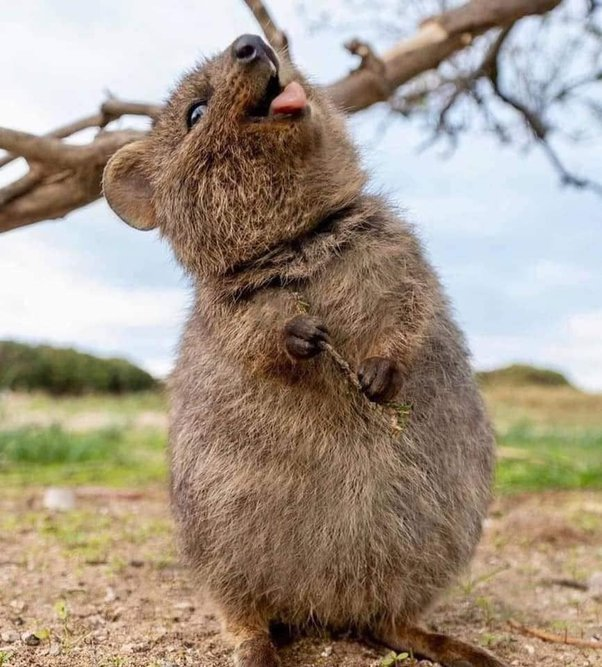
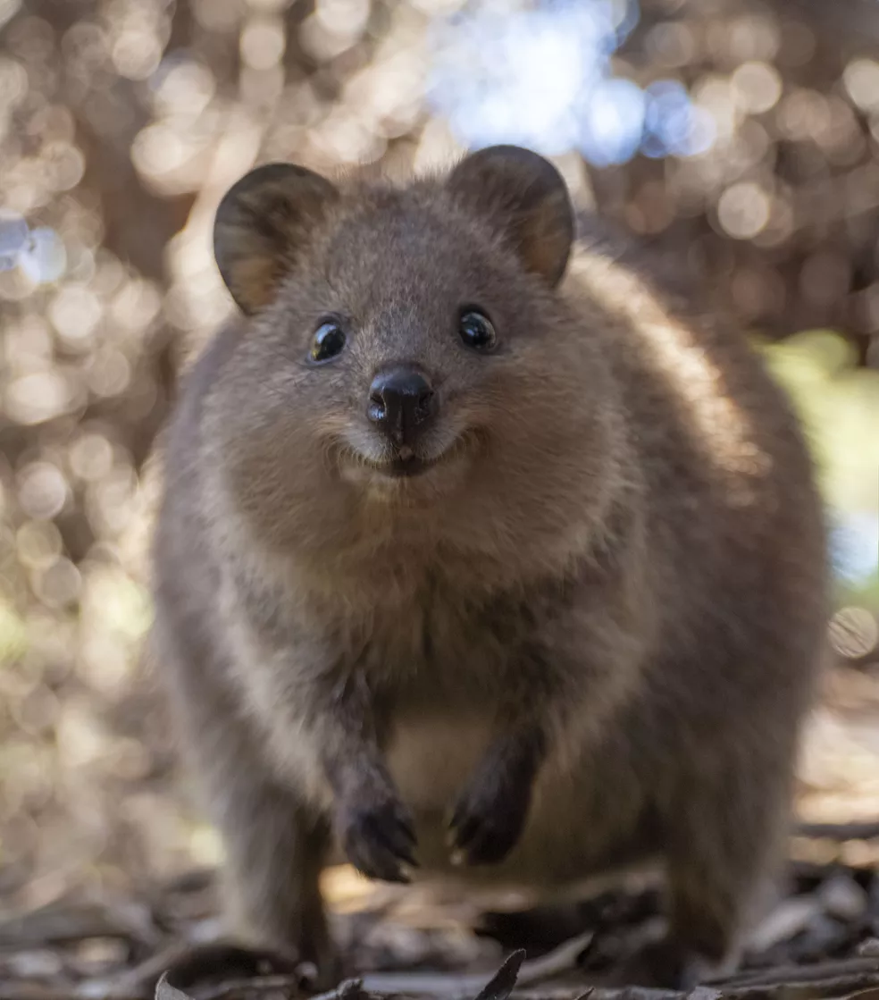
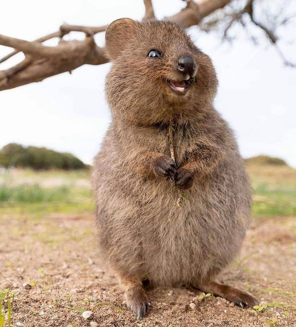
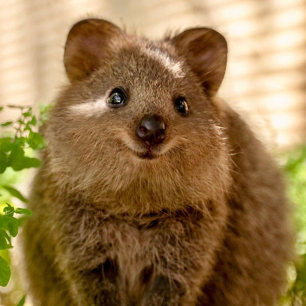

Quokka
Uma página de entrada para enaltecer o animal mais feliz do mundo, o Quokka. ❤




O Quokka é incrível!
Além do sorriso estampado no rosto, os quokkas são realmente muito simpáticos e dóceis! 🎉
Apesar de selvagem, o quokka é considerado tolerante à presença humana, permitindo nos aproximarmos deles. 🥰
As populações de quokkas selvagens estão diminuindo à medida que predadores invasores como raposas e gatos se movem para o território quokka. Eles precisam permanecer na natureza. Você não pode ter um. 😕